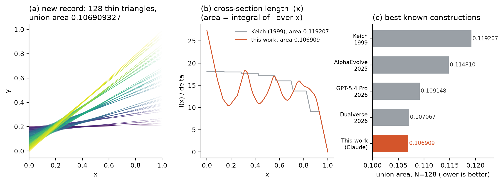

Kakeya Records
By Shrestha Pandey, directing an AI research agent (Claude Code, Opus 5.5) on an 8 GB laptop. Together they found new best-known constructions for an open discrete-geometry problem: the thin-triangle Kakeya problem. It set the first record 63 minutes after starting, and every value is certified exactly.

Best known union areas
| N | Keich 1999 | AlphaEvolve 2025 | GPT-5.4 Pro 2026 | Previous best 2026 | This work |
|---|---|---|---|---|---|
| 32 | 0.154590 | 0.141647 | – | 0.138596 | 0.138432 |
| 64 | 0.134694 | 0.121735 | – | 0.120901 | 0.120839 |
| 128 | 0.119207 | 0.114810 | 0.109148 | 0.107067 | 0.106909327 |
How it works
Every slice is N intervals of equal length L, so the width is L + Σ min(gap, L). That gives the area and an exact gradient with no geometry library.
The caps are smoothed with a temperature that goes to 0, and Adam slides through the kinks of the piecewise-linear objective.
Each triangle is exactly the union of two thinner children, so optimal area can only fall under refinement. The search runs coarse-to-fine from N = 8 to 128.
Populations of local optima are mutated (crossover, shifts, tilts, resets) and re-descended on a Numba kernel, with migration between islands.
Verify in one minute
git clone https://github.com/shrestha-droid/kakeya-records && cd kakeya-records git clone https://github.com/ewang26/HorizonMath python src/verify_exact.py results/n128.json # exact rational arithmetic marimo edit notebook.py # interactive certificate + official validator